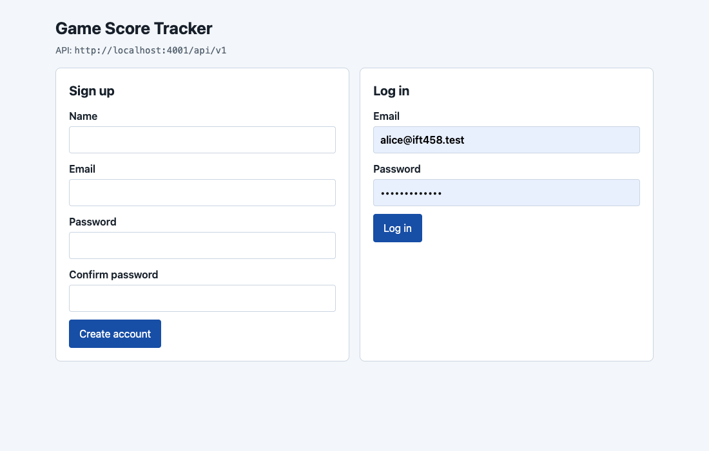
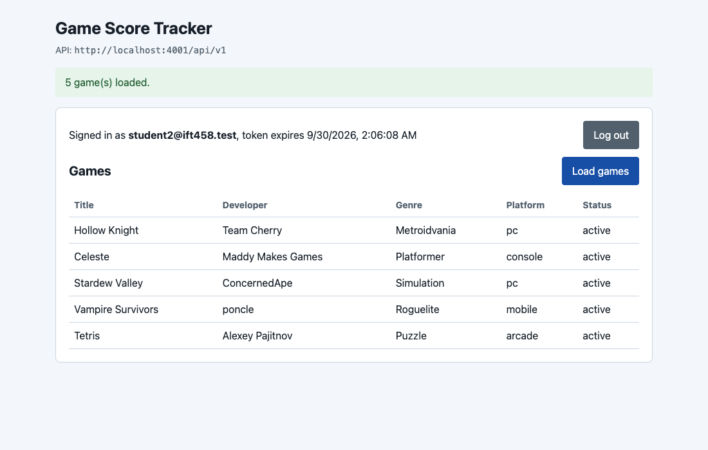
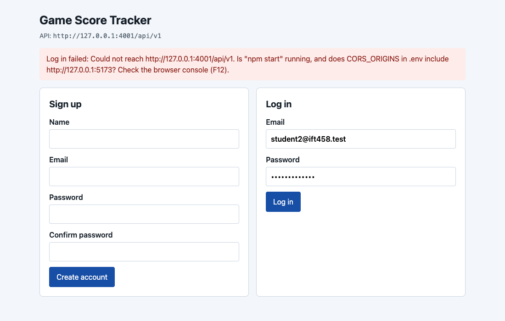
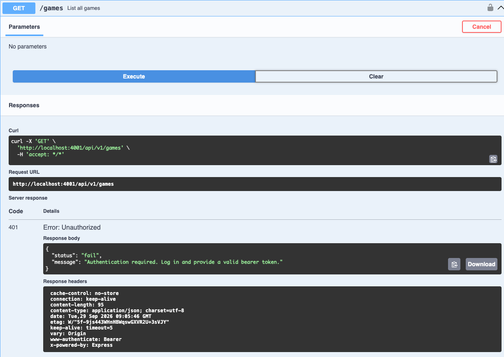
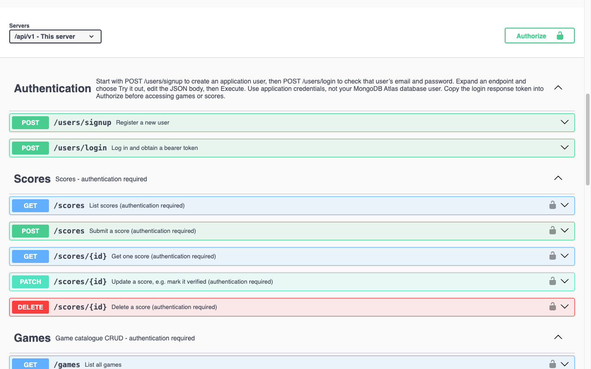

Debugging Level 2 in VS Code
You will pause the running API at numbered breakpoints and watch, line by line, how a password becomes a hash and how a token is born, checked and trusted. Work through the sections in order and mark each one done. Every screenshot on this page is a real screenshot of this project.
STEP 1 Setup (once)
Get the API running under the VS Code debugger.
- Open the project folder itself in VS Code (File → Open Folder…), not its parent.
.vscode/launch.jsonmust be at the top of the Explorer. - Install the packages, and load sample data if your instructor asks for it:
npm installSeeded users log in with the passwordnpm run seedpassword12345. - Stop any
npm startthat is already running. Port 4001 can only be used by one program at a time. - Open Run and Debug (Ctrl+Shift+D, or Cmd+Shift+D on a Mac), choose Debug API server, and press F5. Wait for
DB connection successfulin the terminal. - Open http://localhost:4001/api-docs.
STEP 2 Watch it work in Swagger
Before setting any breakpoints, send each request once so you know what "working" looks like. Click through the seven screens in order.
Every reload clears Authorize. This Swagger forgets your token when the page reloads, so the next student on a shared computer cannot reuse it. After a reload, log in again and click Authorize again, or every games and scores request returns 401.
The tokens in these screenshots came from a throwaway test database that no longer exists, so they cannot be used. Your own token is different every time you log in. Treat it like a password and cover it in screenshots.
STEP 3 How to set a breakpoint
Every breakpoint is marked in the code with a comment that starts ● BREAKPOINT.
- Search the whole project for
● BREAKPOINT(Ctrl+Shift+F, or Cmd+Shift+F). Each comment block says what to do. - Click in the gutter just left of the line number of the line the explorer in Step 4 marks with a red dot. A red dot appears in VS Code too.
- Send the request named in Trigger from Swagger. VS Code jumps to the front and highlights the paused line.
| Key | What it does |
|---|---|
| F5 | Continue to the next breakpoint |
| F10 | Step over: run this line and stop on the next one |
| F11 | Step into: follow a function call into its file |
| Shift+F5 | Stop debugging |
While paused: the VARIABLES panel shows local values, hovering over a variable shows its value, and the DEBUG CONSOLE runs any expression inside the paused code. The explorer below lists the expressions to try.
Route breakpoints (R1–R5) go on next();. A line such as router.use((req, res, next) => { runs once, when the server starts, to build the route table. The next(); inside it runs on every request, so that is where the red dot goes.
STEP 4 Breakpoint explorer
The code below is copied from this project's files, with the real line numbers. The red dot marks the line to click. Breakpoints you open turn green in the list.
STEP 5 Follow one request through the chain
For GET /games/{id}, set every breakpoint below, send the request once, and press F5 at each stop. The request always visits them in this order, because app.js mounts authenticate before the games router. Click Next stop to walk through it here first.
In VS Code, the CALL STACK panel shows Express handing the request from one function to the next.
STEP 6 Salt, cost and the life of a token
Salt and cost
- The salt is 22 random characters made for every password (breakpoint 3). It is stored inside the hash, it is not secret, and it is not in
.env. BCRYPT_ROUNDSin.envis the cost:12means 212 rounds. It is stored in the hash too ($2b$12$…).- One secret added to every password is called a pepper. This project does not use one.
Life of the token
| Stage | What happens | Stop |
|---|---|---|
| Birth | Login makes a random token and stores only its SHA-256 and expiresAt | 9–11 |
| Use | Every request re-hashes the token and finds the session | 12–15 |
| Expiry | expiresAt has passed, so the middleware returns 401 at once | 14 |
| Cleanup | MongoDB's TTL index deletes the expired session, about once a minute | — |
| Early logout | Not possible in this build. There is no logout endpoint. | — |
Watch a token die: set TOKEN_LIFETIME_MINUTES=1 in .env, restart the debugger, log in, wait a minute, call GET /games again, and stop at breakpoint 14. session is null.
STEP 7 The browser client and developer tools
The same API, used from a separate web page. Run the API and the client in two terminals:
npm startnpm run clientThen open http://localhost:5173.


Authorization: Bearer <token>.See your token in the developer tools
Open DevTools with F12 (Cmd+Option+I on a Mac).
1. Network tab (Swagger and the client)
- Open Network before you log in, and filter by Fetch/XHR.
- Log in. Click the
loginrequest and open Response: you see"token": "…64 hex characters…". - Load games. Click the
gamesrequest and open Headers → Request Headers: you seeAuthorization: Bearer <token>.
You may also see an OPTIONS request first. That is the CORS preflight. The browser sends one before a cross-origin request with a JSON body or an Authorization header, and remembers the answer for 10 minutes. Swagger never shows one, because it is on the same origin as the API.
2. Console tab (browser client only)
Type:
sessionAfter you log in it shows { token, expiresAt, user }. Reload the page and type it again: it shows null. The token lived only in memory.
Where you will NOT find it: Application → Local Storage and Session Storage. Nothing is saved to disk for another script, or the next user of a shared computer, to pick up.
Anyone who copies the token from the Network tab can use it until it expires, even after you click Log out, because Level 2 has no logout endpoint.
When the page says "Could not reach…"

http://127.0.0.1:5173, an origin that is not in CORS_ORIGINS.The browser console (F12) then shows the real reason:
Access to fetch at 'http://127.0.0.1:4001/api/v1/users/login' from origin 'http://127.0.0.1:5173'
has been blocked by CORS policy: Response to preflight request doesn't pass access control check:
No 'Access-Control-Allow-Origin' header is present on the requested resource.
Fix: add the page's origin to CORS_ORIGINS in .env, then restart the API:
CORS_ORIGINS=http://localhost:5173,http://127.0.0.1:5173STEP 8 Read the terminal log
Every request is written to the terminal and to logs/. A failure comes with a numbered checklist of what to check. This is a real excerpt: a signup, a login, a wrong password, then GET /games with no token.
→ POST /api/v1/users/signup [authController.signup] from ::1 (localhost) · payload {"body":{"name":"Postman Student","email":"postman@ift458.test","password":"***","passwordConfirmation":"***"}} ✓ 201 Created in 203.8ms → POST /api/v1/users/login [authController.login] from ::1 (localhost) · payload {"body":{"email":"postman@ift458.test","password":"***"}} ✓ 200 OK in 193.5ms → POST /api/v1/users/login [authController.login] from ::1 (localhost) · payload {"body":{"email":"postman@ift458.test","password":"***"}} ✓ CLO DEMONSTRATED L1-CLO4 Reject invalid credentials without revealing which part was wrong ✗ 401 Unauthorized in 192.7ms (POST /api/v1/users/login) What to check, in order: 1. The email or password did not match. 2. Login gives the SAME message for an unknown email and a wrong password, on purpose. 3. Seeded users log in with password12345 (run npm run seed first). → GET /api/v1/games [(no controller)] from ::1 (localhost) ✗ 401 Unauthorized in 0.1ms (GET /api/v1/games) What to check, in order: 1. No valid bearer token came with this request (games and scores need one). 2. Swagger: POST /users/login, copy the token, click Authorize, paste ONLY the 64-character token (Swagger adds "Bearer "). 3. Reloading the Swagger page clears Authorize on purpose - authorize again after every reload.
- Passwords never appear. The logger replaces them with
***. [(no controller)]means the request was stopped before any controller ran. Here,authenticateturned it away.- Stopping the server: press Ctrl+C. The server writes the course-outcome summary and a checksum to the log, then exits.
STEP 9 JWT lab
The API uses opaque tokens, not JWTs. labs/jwt-walkthrough.js builds a JWT by hand so you can compare the two.
- Add a secret to
.envif you have not already:Paste the output afternode -e "console.log(require('crypto').randomBytes(32).toString('hex'))"JWT_SECRET=. - In Run and Debug, choose Debug JWT lab and press F5.
- Breakpoints J1–J6 show the header, the claims, the HMAC-SHA256 signature and the verification. Open them in the explorer with the JWT lab filter.
- The lab then tampers with the payload, uses a wrong secret and waits for expiry. Each one is rejected.
Never paste JWT_SECRET or a real application token into a website.
STEP 10 Exercises
Answer each with a file, a line and a value. Your answers are saved in this browser only, so copy them into your report before you close it.
STEP 11 Troubleshooting
Swagger says 401 "Authentication required" on games or scores
No valid token came with the request. The usual cause is a Swagger reload, which clears Authorize on purpose. Log in again, click Authorize, and paste only the 64-character token. Swagger adds Bearer itself, so pasting Bearer abc… sends Bearer Bearer abc…, which is also a 401.

CORS error when opening Swagger by IP address
An origin is scheme + host + port, so http://localhost:4001 and http://192.168.1.5:4001 are different origins. Swagger's server address is the relative path /api/v1, so it always calls the host that served the page. If you still see the error, restart the server and reload. The Servers dropdown should show /api/v1 - This server.

The browser client says "Could not reach…"
Either npm start is not running, or the page's origin is missing from CORS_ORIGINS in .env. Check the console (F12) for the exact reason, fix .env, and restart the API. See Step 7.
Port 4001 is already in use
Another copy of the server is still running, often an npm start in another terminal. Stop it with Ctrl+C, or stop debugging with Shift+F5, then start again.
A breakpoint never stops
- Did you start the server with Debug API server (F5)?
npm startdoes not stop at breakpoints. - Is the dot on the line the explorer marks? A route breakpoint on the
router.use(…)line only fires at startup. - A hollow grey dot means VS Code could not bind it. Save the file, then restart debugging.
- For breakpoints 12–16, did you click Authorize first? Without a token the request stops at 12 and never reaches 14.